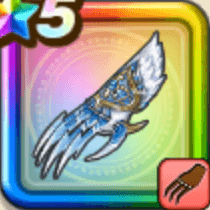

グリザードの鋭牙
攻略班 9.5点 / やる気エクステンションコキュートス・プネウマグレイシャル・ハウル義侠の獣フローズンハント
くわしい特徴
【レベル別習得スキル】 Lv1【ドラゴン】すばやさ+5 Lv1【天地雷鳴士】きようさ+10 Lv10やる気エクステンション（消費MP：最大MPの10%）味方1人の良い効果を最大2ターン延長する(戦闘中2回のみ使用可能) Lv20コキュートス・プネウマ（消費MP：43）冷気をまとった氷の牙で敵1体にヒャド属性のブレス特大ダメージ(メタル系に+99)を与える Lv30グレイシャル・ハウル（消費MP：63）敵全体に敵ごとに有効なヒャドかザバ属性のブレス特大ダメージを与えごくまれにふきとばす。けもの系ならまれにふきとばす Lv35けもの系へのダメージ+5% Lv40エレメント系へのダメージ+5% Lv45攻撃力+12 Lv50義侠の獣（消費MP：最大MPの2%）戦闘開始時に「じぶん」の特殊効果「けもの系へのダメージ+」「エレメント系へのダメージ+」の効果値を2倍にする(効果2ターン) Lv50フローズンハント（消費MP：最大MPの1%）戦闘開始時に敵全体に凍結 Lv1を付与する 【限界突破スキル】 1凸スキルの斬撃・体技・ブレスダメージ+7% 2凸スキルの斬撃・体技・ブレスダメージ+7% 3凸スキルの斬撃・体技・ブレスダメージ+7% 4凸スキルの斬撃・体技・ブレスダメージ+7%